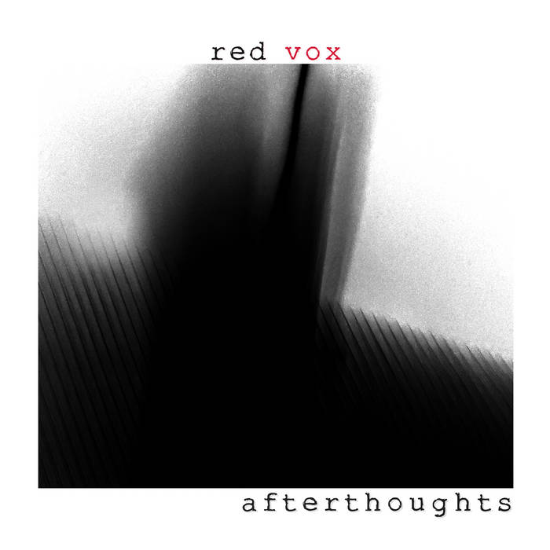

The Music of Red Vox
This page will talk about the music of Red Vox slightly more in depth. I will include fun facts and my personal favorites from the albums.
Albums and EPs
What Could Go Wrong
What Could Go Wrong is Red Vox's first album. It was relased on March 29th, 2016.
It has a very garage band hard rock tone. My personal favorite song from this album is Atom Bomb.
It's an exciting sounding song about anxiety I think. On the CD release and streaming of this album,
the song In a Dream has a tease for Another Light. Various albums inspired this, including Nevermind by Nirvana
and Ziggy Stardust by David Bowie.
Song fun fact: The first track, There She Goes, originally had a meme sound called the world's loudest orgasm in the orignal YouTube upload.
It was quickly removed.
Blood Bagel
Blood Bagel is Red Vox's first EP. It was released on September 14th, 2016.
It is a comedy rock EP, and the humor is similar to Vinny and Mike's humor on the streams.
Most of the songs were old songs that were recycled into the EP.
My personal favorite track from this is Vomit in The Ballpit.
It is based off an experience Vinny had as a kid where he saw vomit in a Chuck E. Cheese ballpit.
Fun fact: Vinny and Mike dressed up as clowns for this.
Another Light
Another Light is Red Vox's second album. It was released on December 14th, 2017.
It is an alt rock album. This is one of Red Vox's most popular albums.
In fact, it hit 13 on the Billboard heatseekers charts.
My favorite song from this album is Reno, it is just an amazing song.
Fun fact: There are two versions of the album cover, no one knows who made them.
Other fun fact: This was originally called Settle for Less after the song, but Mike kept forgetting it, so they changed it to Another Light!
Another Light demos
These are just some demos. Not super interesting honestly, but it's cool that we have them.
Kerosene

Kerosene is Red Vox's third album. It was released on January 8th, 2019.
It is a acoustic album. Some songs were made while Vinny was depressed.
He doesn't really like the album for this reason.
My favorite song on the album is Kerosene, it paints an interesting picture in my mind.
Fun Fact: This was originally an EP, but more songs kept getting added.
Realign
Realign is Red Vox's fourth album. It was released on July 10th, 2020.
It is a more synthesizer focused album. There are less real drums on this and more drum machine, possibly due to Covid impacting the album's productions.
My favorite song on the album is Return the Call, I like how it sounds very much.
Realign is the first Red Vox album to have music videos. The title track and Ozymanidas have them.
 Fun Fact: The album cover is based on an ai generated image, but from before ai was actually good.
Fun Fact: The album cover is based on an ai generated image, but from before ai was actually good.
Lost For A While
Lost For A While is Red Vox's second EP. It was released on October 30th, 2020. Basically just Realign B sides. My favorite song on the album is Rather Be Lonely. It just sounds nice.
Visions

Visions is the first part of Visions and Afterthoughts, which is a double album. Visions was released on January 14th, 2022.
It is a return back to hard rock mostly, but not exactly like What Could Go Wrong.
My favroite song on this album is There's A Place.
Fun Fact: The music video for All Aout a Feeling spawned the Fat Pigeon.
Afterthoughts
Afterthoughts is the second part of Visions and Afterthoughts. Afterthoughts was released on March 3rd, 2023. Its basically the same as Visions in sound. My favorite song from this album is Playing by the Rules.
Garbage Land

The Garbage Land EP is the third EP, which consists of two songs. Garbage Land is a Beck-like song, while Clone Me is a rock song. Both of the music videos have fun facts, the one for Garbage Land was made in VRChat, and Clone Me was filmed by Vargskelethor Joel while on vacation. I like both of the songs. The songs were released first, and then put in an EP. They were released April 1st, April 6th and April 10th.
Singles
Trolls and Goblins
Trolls and Goblins is a single. It was released on October 22nd 2015. It being recorded was a charity incentive from a charity stream Vinny did. Its ok. Fun Fact: it says that there is tuba on Bandcamp, but there is no tuba.
Stranded
Stranded is a single recorded during the Another Light sessions and included on the vinyl. It is an absolutely amazing song, one of their best songs.
Me, Oh Well
This is a non-album single that was released on August 3rd, 2022, along with Almost a Stranger from Afterthoughts.
It is my favorite Red Vox song (depends on mood).
Fun Fact: you can hear a phone alarm go off at the end of the song.
Remember
This is a single from the upcoming album. It was released on June 27th, 2024. It is a very screamy song. In fact, Vinny didn't think he had it in him to be able to do it. It is a great song.Live show singles
There were several new songs during the 2024 TooManyGames live show. They are called: Throw Away, Cheer Up, In Your Head, Memory Loss, Long Long Ago, Gasoline, Dopamine and Have You Ever Been Lonely. Some of these will be on the next album, but some are live only.